DAY 05AI 에이전트 · 조건 분기 + AI
조건 분기와 AI를 섞은 자동화
If · Switch로 상황에 따라 길을 나누고, Gemini가 문의를 읽고 판단하게 합니다. 오늘부터 Node가 7~10개인 실무형 Flow를 만듭니다.
1.수업 구성
조건에 따라 다른 행동을 하는 Flow와, Gemini의 판단 결과로 길을 나누는 Flow를 만들 수 있다.
Gemini 연결 → Flow 1~6 (If · Gemini · Switch · 답장 초안 · 아침 요약 · 후기 분류)
Flow마다 비슷한 유형 두 개를 혼자 만들어 봅니다. 막히면 "구조 보기"를 펼칩니다.
기본 Flow Flow 1~4는 모두 함께, 더 만들기 Flow 5 · 6과 추가 임무는 진도에 맞춰 이어 갑니다. 각 Flow는 구조를 먼저 보고 새 Workflow로 처음부터 만듭니다.
AI_AGENT_DAY05를 만들어 둡니다. Google 시트 · Gmail 연결이 없다면 DAY 03 · Credential부터 만드세요.
2.If · Switch · Filter와 Gemini
맞다 / 아니다 두 갈래
인원이 10명 이상인가?
값에 따라 여러 갈래
수업 · 결제 · 환불 · 기타
맞는 것만 남기고 버리기
부정 후기만 남기기
조건 칸은 모두 왼쪽 값(value1, 끌어다 놓기) · 비교 방법(고르기) · 기준(value2, 직접 쓰기) 세 칸입니다.
Gemini가 "환불문의"라고 판단하면, 그 결과로 Switch가 길을 고릅니다. 판단은 AI가, 길의 규칙은 사람이 정합니다.
3.준비: Gemini 연결
n8n이 Gemini를 쓰려면 API Key(Gemini가 누가 보낸 요청인지 확인하는 인증 정보)가 필요합니다. 키는 n8n Credential에 한 번 저장하면 오늘 모든 Flow에서 골라 씁니다.
STEP 1API 키 만들기
aistudio.google.com에 들어가 Google 계정으로 로그인합니다.- 왼쪽 메뉴 API 키를 누르고, 오른쪽 위 API 키 만들기를 누릅니다.
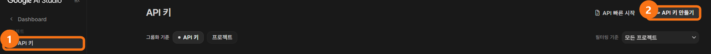
크게 보기① 왼쪽 메뉴 API 키 ② 오른쪽 위 API 키 만들기 - 만들어진 키 줄의 복사 아이콘을 눌러 키를 복사합니다.

API Key는 비밀번호처럼 다룹니다. 채팅방 · SNS에 올리거나 캡처에 보이게 하지 마세요. 오늘 실습은 무료 범위로 충분하고, 짧은 시간에 너무 많이 실행하면 사용 한도 오류가 날 수 있습니다.
STEP 2n8n에 키 저장하기
- 새 Workflow
DAY05_Gemini_Test를 만들고 Add first step → Trigger manually - 오른쪽 + →
gemini검색 → Google Gemini → Message a model - 맨 위 Credential to connect with → Create new credential
- API Key 칸에 복사한 키를 붙여 넣습니다. Host는 그대로 둡니다.
- 오른쪽 위 Save를 누릅니다.
초록색 Connection tested successfully가 보이면 성공입니다. 오른쪽 위 x로 창을 닫습니다.

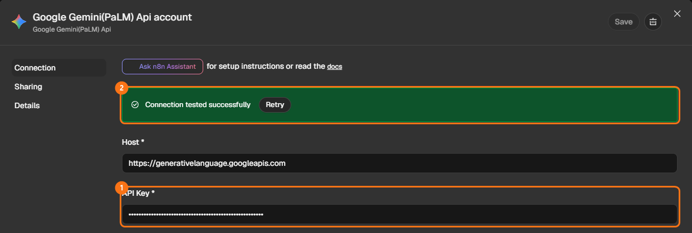
크게 보기STEP 3한 번 물어보고 "답 칸" 찾기
- Message a model 설정을 아래 표대로 채웁니다.
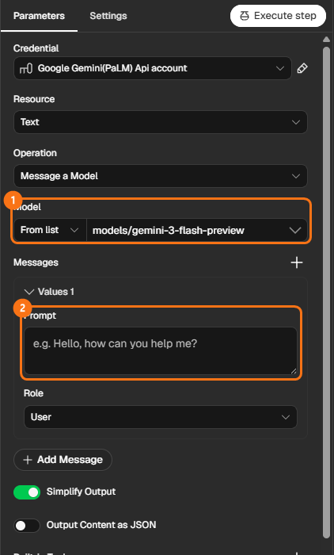
크게 보기① Model ② Messages의 Prompt

| 항목 | 설정 |
|---|---|
| Resource · Operation | Text · Message a Model (기본값) |
| Model | From list에서 이름에 flash가 들어간 것 (예: models/gemini-3-flash-preview) |
| Messages → Prompt | n8n을 한 문장으로 소개해 줘. |
| Simplify Output | 켜 둔 그대로 |
- Execute step을 누릅니다.
- 오른쪽 OUTPUT을 펼쳐 Gemini가 쓴 문장이 들어 있는 칸을 찾습니다.
OUTPUT 안에서 Gemini가 쓴 문장을 찾았으면 성공입니다. 오늘 "Gemini의 답"이라고 하면 이 칸을 말합니다. 다음 Node에서 이 칸을 끌어다 놓으면 {{ $json.… }} 모양으로 들어갑니다.
비교할 때는 .trim() — Gemini의 답 끝에는 눈에 안 보이는 줄바꿈이 붙기도 합니다. If · Switch · Filter에서 Gemini의 답을 비교할 때는, 끌어다 놓아 생긴 {{ … }}의 닫는 괄호 }} 바로 앞에 .trim()을 붙입니다. 오늘 "답 + .trim()"이라고 쓴 곳은 모두 이 뜻입니다.
4.Flow 1 · 단체 예약은 담당자에게
기본 FlowForm Trigger · If · Gmail ×2
상황 — 예약 인원이 10명 이상이면 담당자가 직접 확인하고, 그보다 적으면 바로 확정 메일을 보내고 싶다.
STEP 1예약 폼 만들기
- 새 Workflow
DAY05_F1_단체예약을 만들고, 가운데 Add first step → 목록에서 On form submission을 고릅니다. - 설정 창 위쪽 Form Title 칸에
예약 신청을 씁니다. 폼 맨 위에 보이는 제목입니다.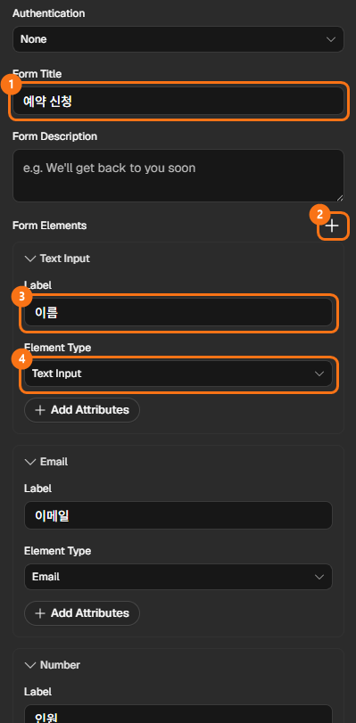
크게 보기① Form Title ② Form Elements 오른쪽 + ③ Label(질문 이름) ④ Element Type(칸 종류) - 아래 Form Elements 오른쪽 +를 누릅니다. 폼에 질문 칸이 하나 생깁니다.
- 새로 생긴 칸의 Label에
이름을 쓰고, Element Type은 Text Input(글자 칸) 그대로 둡니다. - 다시 +를 눌러 두 번째 칸 — Label
이메일, Element Type은 목록에서 Email을 고릅니다. - 한 번 더 +를 눌러 세 번째 칸 — Label
인원, Element Type은 Number를 고릅니다. 숫자만 넣을 수 있는 칸이라 뒤에서 "10명 이상" 비교가 됩니다.

| Form Elements | Label (질문 이름) | Element Type (칸 종류) |
|---|---|---|
| 첫 번째 칸 | 이름 | Text Input |
| 두 번째 칸 | 이메일 | |
| 세 번째 칸 | 인원 | Number |
Label에 쓴 이름이 그대로 데이터 이름이 됩니다. 뒤에서 {{ $json.인원 }}처럼 쓰이니 띄어쓰기 없이 짧게 씁니다.
- 설정 창 위쪽 Execute step을 누릅니다. 새 창에 폼이 열리면 내 이름 · 내 메일 · 인원
12를 넣고 제출합니다.
[ On form submission ]
오른쪽 OUTPUT에 세 값이 보이면 성공입니다.
이름 : 내 이름 이메일 : 내 메일 인원 : 12
STEP 2인원으로 길 나누기 — If
- Form 오른쪽 + →
if검색 → If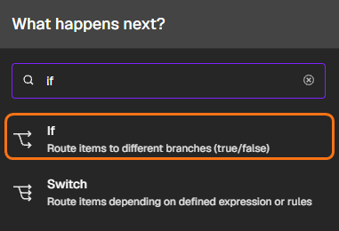
크게 보기 - value1 칸에 INPUT의 인원을 끌어다 놓습니다.
- 가운데 비교 칸(is equal to)을 눌러 Number → is greater than or equal to를 고릅니다.
- value2 칸에
10을 씁니다.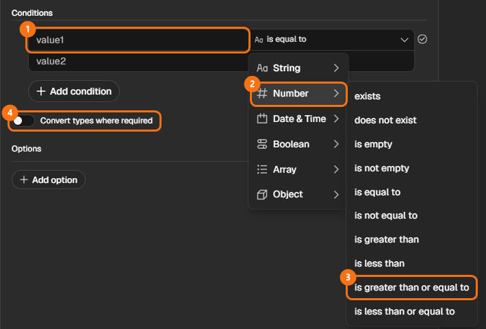
크게 보기① value1 ② Number ③ is greater than or equal to ④ 형식 오류가 나면 켜는 Convert types where required - Execute step을 누릅니다.


| 칸 | 값 |
|---|---|
| value1 | {{ $json.인원 }} |
| 비교 | Number → is greater than or equal to |
| value2 | 10 |
[ On form submission ] → [ If ]
OUTPUT의 true 쪽에 1 item이 보이면 성공입니다(인원 12). 숫자 형식 오류가 나면 조건 아래 Convert types where required를 켭니다.
STEP 3true — 담당자 알림
- If Node 오른쪽 true 출구의 + → Gmail → Send a message
- 아래 표대로 채웁니다. If는 받은 값을 그대로 넘기므로 이름 · 인원을 INPUT에서 바로 끌어다 놓을 수 있습니다.
| 항목 | 설정 |
|---|---|
| To | 내 주소에 +team 붙이기 (예: myname+team@gmail.com) |
| Subject | [단체 예약] {{ $json.이름 }} {{ $json.인원 }}명 — 확인 필요 |
| Email Type | Text |
| Message | {{ $json.이름 }}님이 {{ $json.인원 }}명 단체 예약을 신청했습니다. 확인 후 연락해 주세요. |
Gmail은 아이디 뒤에 +글자를 붙여도 내 메일함으로 옵니다. 실습에서는 담당자 대신 내 주소를 씁니다.
STEP 4false — 확정 메일
- If Node 오른쪽 false 출구의 + → Gmail → Send a message
| 항목 | 설정 |
|---|---|
| To | {{ $json.이메일 }} |
| Subject | 예약이 확정되었습니다 |
| Email Type | Text |
| Message | {{ $json.이름 }}님, {{ $json.인원 }}명 예약이 확정되었습니다. |
[ On form submission ] → [ If ] ─ true → [ Gmail: 담당자 알림 ]
└ false → [ Gmail: 확정 메일 ]
STEP 5켜고 두 갈래 확인하기
- 오른쪽 위 Publish → Form Node의 Production URL을 새 탭에서 엽니다.
- 인원
3으로 한 번,15로 한 번 제출합니다. - 위쪽 Executions에서 두 실행을 각각 열어 봅니다.
15명은 +team 알림, 3명은 확정 메일이 오면 완성입니다. Executions에서는 실제로 지나간 길이 초록색으로 보입니다. Production URL은 카톡 · 문자 · QR로 보내면 누구나 쓸 수 있는 실제 신청 페이지입니다. Workflow가 꺼져 있으면(Publish 전) 제출해도 동작하지 않습니다.
설문지 응답을 Google 시트에 연결하고, n8n은 그 시트에 새 줄이 생기면 시작하게 하면 됩니다. 데이터가 들어오는 입구만 바뀌고, If 뒤의 구조는 오늘 만든 것과 똑같습니다.
Google 설문지 → 응답 시트 → Google Sheets Trigger(새 줄) → If → Gmail
* 응답 시트의 열 이름은 질문 문장 그대로이고 맨 앞에 타임스탬프 열이 붙습니다. 시트를 확인하는 방식이라 제출 뒤 반응까지 1분쯤 걸릴 수 있습니다. 오늘은 If에 집중하기 위해 n8n 폼을 씁니다.
연습 임무 — 혼자 만들어 보기
막히면 n8n 화면을 캡처해 ChatGPT에 올리고, "이 구조를 만들고 있는데 여기서 막혔어요"라고 물어보며 이어 가세요. 캡처에 API Key · 개인정보가 보이지 않게 합니다.
주문 금액으로 배송비 안내
상황 — 주문 폼으로 금액을 받는다. 50,000원 이상이면 "무료 배송 대상입니다", 아니면 "배송비 3,000원이 추가됩니다" 메일을 보낸다.
- 폼 항목: 이름 · 이메일 · 주문금액(Number)
- 메일은 모두 신청자 이메일로
성공 기준 — 60000과 20000을 넣었을 때 서로 다른 메일이 온다.
재수강 의향에 따라 다른 메일
상황 — 수업 끝 설문에서 "다음 과정도 들을 생각이 있나요?"를 묻는다. "예"면 할인 쿠폰 안내를, "아니오"면 감사 인사를 보낸다.
- 폼 항목: 이름 · 이메일 · 재수강(Dropdown: 예 / 아니오)
- 이번에는 숫자가 아니라 글자를 비교합니다.
성공 기준 — "예"와 "아니오"를 골랐을 때 서로 다른 메일이 온다.
5.Flow 2 · 문의 폼 → AI 요약 · 분류 → 시트
기본 FlowForm Trigger · Google Gemini ×2 · Google Sheets · Gmail
상황 — 문의를 받으면 AI가 한 줄 요약과 유형을 붙여 기록하고, 문의자에게는 요약을 담아 접수 메일을 보내고 싶다.
준비 — 시트에 탭 문의기록을 만들고 A1 칸에 붙여 넣기
STEP 1문의 폼 만들기
- 새 Workflow
DAY05_F2_문의분류→ On form submission - Form Title
문의하기, 항목(Form Elements의 +로 추가, Label · Element Type)이름Text Input ·이메일Email ·문의내용Textarea - Execute step → 문의내용에
카드 결제가 두 번 됐어요. 한 번 취소해 주세요.로 제출합니다.
STEP 2AI 요약 — 첫 번째 Gemini
- Form 오른쪽 + → Google Gemini → Message a model. Credential과 Model은 3번에서 정한 것을 고릅니다.
- Node 위쪽 이름(Message a model)을 눌러
AI 요약으로 바꿉니다. - Prompt 칸에 아래 글을 붙여 넣고, 맨 아래 줄에 INPUT의 문의내용을 끌어다 놓습니다.
- Execute step을 누릅니다.
Gemini의 답에 문의를 줄인 한 문장이 나오면 성공입니다.
STEP 3AI 분류 — 두 번째 Gemini
- AI 요약 오른쪽 + → Google Gemini → Message a model, 이름은
AI 분류 - Prompt 칸에 아래 글을 붙여 넣습니다.
- 왼쪽 INPUT 위 Node 이름 칸을 눌러 On form submission으로 바꾸고, 문의내용을 맨 아래 줄에 끌어다 놓습니다. 바로 앞 Node가 Gemini라서 문의내용은 폼에서 가져와야 합니다.
- Execute step을 누릅니다.
Prompt 맨 아래에는 {{ $('On form submission').item.json.문의내용 }}처럼 Node 이름이 붙은 모양으로 들어갑니다. 정상입니다.
Gemini의 답이 결제문의 한 단어로 나오면 성공입니다.
STEP 4시트에 기록하기
- AI 분류 오른쪽 + → Google Sheets → Append row in sheet, Sheet는
문의기록, Mapping Column Mode는 Map Each Column Manually - INPUT 위 Node 이름 칸을 바꿔 가며 아래 표의 값을 끌어다 놓습니다.
| 시트 열 | 어디서 끌어다 놓나 |
|---|---|
| 이름 · 이메일 · 문의내용 | On form submission의 같은 이름 값 |
| 요약 | AI 요약의 답 |
| 분류 | AI 분류의 답 + .trim() |
STEP 5접수 메일 보내기
- Google Sheets 오른쪽 + → Gmail → Send a message
| 항목 | 설정 |
|---|---|
| To | On form submission의 이메일 |
| Subject | 문의를 받았습니다 |
| Email Type | Text |
| Message | [이름]님 문의를 받았습니다. 접수 내용: [AI 요약의 답] — 대괄호 자리는 끌어다 놓기 |
[ Form ] → [ AI 요약 ] → [ AI 분류 ] → [ Google Sheets ] → [ Gmail ]
STEP 6켜고 여러 문의 넣어 보기
- Publish → Production URL에서 결제 · 환불 · 주차 문의를 하나씩 제출합니다.
분류 열에 정해 준 네 가지(수업문의 · 결제문의 · 환불문의 · 기타)만 들어가면 완성입니다. 설명이 붙어 나오면 분류 Prompt부터 고칩니다.
연습 임무 — 혼자 만들어 보기
막히면 n8n 화면을 캡처해 ChatGPT에 올리고, "이 구조를 만들고 있는데 여기서 막혔어요"라고 물어보며 이어 가세요. 캡처에 API Key · 개인정보가 보이지 않게 합니다.
강의 후기 요약 · 감정 기록
상황 — 후기 폼을 받으면 AI가 한 줄 요약과 감정(긍정 / 중립 / 부정)을 붙여 시트 후기기록(이름 · 후기 · 요약 · 감정)에 남긴다.
- Gemini 두 개 — 요약용, 감정용. 감정 Prompt는 직접 씁니다.
- 감정 열에는 세 단어 중 하나만 들어가야 합니다.
성공 기준 — 칭찬 · 불만 · 무난한 후기를 하나씩 넣었을 때 감정이 각각 다르게 기록된다.
지원서 핵심 역량 뽑기
상황 — 지원 폼의 자기소개를 AI가 읽고 핵심 역량 세 가지를 쉼표로 뽑아 시트 지원자(이름 · 이메일 · 핵심역량)에 저장하고, 지원자에게 접수 메일을 보낸다.
성공 기준 — 핵심역량 칸에 기획, 데이터 분석, 협업처럼 세 개가 쉼표로 들어간다.
6.Flow 3 · 문의 메일 자동 분류 · 라벨
기본 FlowGmail Trigger · Google Gemini · Switch · Gmail(라벨) ×4 · Google Sheets
상황 — [문의] 메일이 오면 AI가 유형을 판단하고, 메일함에 유형별 라벨을 붙인 뒤 시트에도 남기고 싶다.
준비
- Gmail 왼쪽 메뉴 라벨 옆 +로 라벨 네 개를 만듭니다 —
문의-수업문의-결제문의-환불문의-기타 - 시트에 탭
메일분류를 만들고 A1 칸에 아래를 붙여 넣습니다. - 내 주소로 제목이
[문의]로 시작하는 메일을 세 통 보내 둡니다 — 수업 시간 · 카드 결제 · 환불 요청
STEP 1[문의] 메일 트리거
- 새 Workflow
DAY05_F3_메일분류→ Gmail → On message received - Poll Times는 Every Minute, Add Filter → Search에
subject:[문의] - Fetch Test Event를 누릅니다.
OUTPUT에 준비에서 보낸 [문의] 메일이 보이면 성공입니다.
STEP 2AI 분류
- Gmail Trigger 오른쪽 + → Google Gemini → Message a model, 이름
AI 분류 - 아래 Prompt를 붙여 넣고 맨 아래에 INPUT의 snippet(메일 내용 미리보기)을 끌어다 놓습니다.
- Execute step을 누릅니다.
STEP 3유형별로 나누기 — Switch
- AI 분류 오른쪽 + →
switch검색 → Switch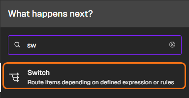
크게 보기 - Mode는 Rules 그대로 두고, Routing Rule 1의 value1에 AI 분류의 답을 끌어다 놓은 뒤
.trim()을 붙입니다. - 비교는 String → is equal to, value2는
수업문의 - 규칙 아래 Rename Output을 켜고 출구 이름을
수업으로 씁니다. 그래야 Canvas에서 어느 출구가 무엇인지 바로 보입니다. - Add Routing Rule을 두 번 눌러 같은 방법으로
결제문의·환불문의규칙을 만들고, 출구 이름은결제·환불로 붙입니다. - 아래 Add option → Fallback Output을 고르고 Extra Output으로 바꿉니다. 세 규칙에 안 맞는 메일(기타)이 갈 출구입니다.
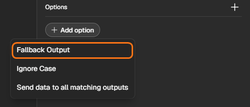
크게 보기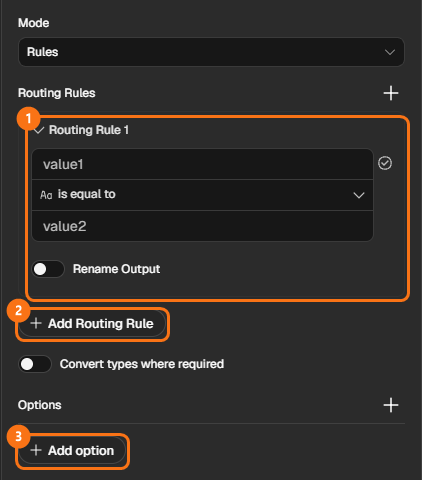
크게 보기① Routing Rule 1 ② Add Routing Rule ③ Add option(Fallback Output) - Execute step을 누릅니다.


Switch 오른쪽에 출구가 네 개(수업 · 결제 · 환불 · Fallback) 생기고, 메일이 맞는 출구로 나가면 성공입니다.
STEP 4출구마다 라벨 붙이기
- 첫 번째 출구 + → Gmail → Add label to message
- INPUT 위 Node 이름 칸을 Gmail Trigger로 바꾸고 id를 Message ID에 끌어다 놓습니다. Label은 목록에서 고릅니다.
- 만든 Node를 선택해 Ctrl + C · Ctrl + V로 세 개 더 만들고, 나머지 출구에 연결한 뒤 Label만 바꿉니다.
| Switch 출구 | Label |
|---|---|
| 수업 | 문의-수업 |
| 결제 | 문의-결제 |
| 환불 | 문의-환불 |
| Fallback | 문의-기타 |
Message ID 칸은 네 Node 모두 {{ $('Gmail Trigger').item.json.id }}입니다.
STEP 5네 길을 시트 하나로 모으기
- 첫 번째 라벨 Node 오른쪽 + → Google Sheets → Append row in sheet (Sheet
메일분류) - 나머지 라벨 Node 세 개의 오른쪽 점을 끌어 Google Sheets 왼쪽 점에 놓습니다.
- 아래 표대로 끌어다 놓습니다.
| 시트 열 | 어디서 끌어다 놓나 |
|---|---|
| 보낸사람 | Gmail Trigger의 From |
| 제목 | Gmail Trigger의 Subject |
| 분류 | AI 분류의 답 + .trim() |
[ Gmail Trigger ] → [ AI 분류 ] → [ Switch ] → 라벨 ×4 → [ Google Sheets ]
STEP 6켜고 새 메일로 확인하기
- Publish → [문의] 메일을 유형별로 하나씩 더 보내고 1~2분 기다립니다.
메일마다 맞는 라벨이 붙고, 시트에 분류가 쌓이면 완성입니다.
연습 임무 — 혼자 만들어 보기
막히면 n8n 화면을 캡처해 ChatGPT에 올리고, "이 구조를 만들고 있는데 여기서 막혔어요"라고 물어보며 이어 가세요. 캡처에 API Key · 개인정보가 보이지 않게 합니다.
회원 등급별 안내 메일
상황 — 가입 폼에서 등급(일반 / 실버 / 골드)을 고르면, 등급마다 다른 혜택 안내 메일을 보낸다. 이번에는 AI 없이 Switch만 씁니다.
성공 기준 — 세 등급을 각각 골라 냈을 때 메일 내용이 모두 다르다.
사내 요청 메일 분류
상황 — 제목에 [요청]이 붙은 사내 메일을 AI가 장비 · 휴가 · 급여 · 기타로 나누고, 유형별 라벨(요청-장비 등)을 붙인다.
- 분류 Prompt는 Flow 3을 참고해 직접 씁니다.
- 라벨은 Gmail에서 미리 만들어 둡니다.
성공 기준 — "노트북이 고장났어요" · "다음 주 금요일 연차 신청합니다" 메일에 각각 맞는 라벨이 붙는다.
7.Flow 4 · 급한 문의는 알림, 나머지는 답장 초안
기본 FlowGmail Trigger · Google Gemini ×2 · If · Gmail(알림 · 임시보관함)
상황 — [상담] 메일이 오면 AI가 급한지 판단한다. 급하면 나에게 바로 알리고, 아니면 AI가 답장 초안을 써서 Gmail 임시보관함에 넣어 둔다. 보내기 전에 사람이 확인한다.
준비 — 내 주소로 [상담] 메일 두 통을 보내 둡니다: [상담] 결제가 두 번 됐어요 · [상담] 다음 달 수업 문의
STEP 1[상담] 메일 트리거와 급한가? 판단
- 새 Workflow
DAY05_F4_상담메일→ Gmail → On message received, Searchsubject:[상담]→ Fetch Test Event - 오른쪽 + → Google Gemini → Message a model, 이름
급한가? - 아래 Prompt를 붙여 넣고 맨 아래에 snippet을 끌어다 놓은 뒤 Execute step
STEP 2긴급이면 true — If
- 급한가? 오른쪽 + → If
| 칸 | 값 |
|---|---|
| value1 | 급한가?의 답 + .trim() |
| 비교 | String → is equal to |
| value2 | 긴급 |
STEP 3true — 나에게 긴급 알림
- true 출구 + → Gmail → Send a message. 메일 정보는 INPUT 위 Node 이름 칸을 Gmail Trigger로 바꿔 끌어다 놓습니다.
| 항목 | 설정 |
|---|---|
| To | 내 주소에 +urgent 붙이기 (예: myname+urgent@gmail.com) |
| Subject | [긴급] {{ $('Gmail Trigger').item.json.Subject }} |
| Email Type | Text |
| Message | {{ $('Gmail Trigger').item.json.snippet }} |
STEP 4false — 답장 초안 쓰기
- false 출구 + → Google Gemini → Message a model, 이름
답장 초안 - 아래 Prompt를 붙여 넣고, 맨 아래에 Gmail Trigger의 snippet을 끌어다 놓습니다.
STEP 5임시보관함에 넣기 — Create a draft
- 답장 초안 오른쪽 + → Gmail → Draft Actions의 Create a draft
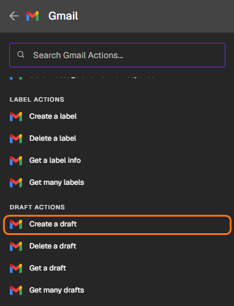
크게 보기 - 아래 표대로 채웁니다. 받는 사람은 Add option → To Email로 칸을 추가해 넣습니다.
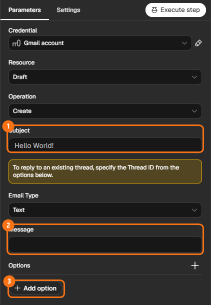
크게 보기① Subject ② Message ③ Add option 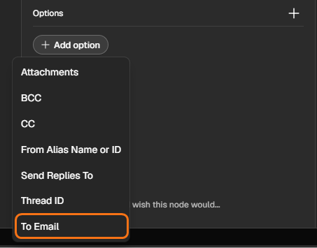
크게 보기③을 누르면 나오는 목록의 To Email


| 항목 | 설정 |
|---|---|
| Subject | Re: {{ $('Gmail Trigger').item.json.Subject }} |
| Email Type | Text |
| Message | 답장 초안의 답 |
| Add option → To Email | Gmail Trigger의 From |
From은 홍길동 <a@b.com> 모양이라 드물게 오류가 날 수 있습니다. 그때는 To Email에 내 주소를 직접 씁니다.
[ Gmail Trigger ] → [ 급한가? ] → [ If ] ─ true → [ Gmail: 긴급 알림 ]
└ false → [ 답장 초안 ] → [ Gmail: Create a draft ]
STEP 6켜고 두 종류 보내 보기
- Publish → [상담] 메일을 급한 것 하나, 일반 문의 하나 더 보냅니다.
결제 문제는 +urgent 알림으로, 일반 문의는 Gmail 임시보관함에 답장 초안으로 들어가면 완성입니다. 초안은 읽어 보고 사람이 보냅니다.
연습 임무 — 혼자 만들어 보기
막히면 n8n 화면을 캡처해 ChatGPT에 올리고, "이 구조를 만들고 있는데 여기서 막혔어요"라고 물어보며 이어 가세요. 캡처에 API Key · 개인정보가 보이지 않게 합니다.
불만 메일의 강도에 따라
상황 — [불만] 메일이 오면 AI가 "강함 / 약함"을 판단한다. 강하면 나에게 알림을 보내고, 약하면 사과 답장 초안만 임시보관함에 넣는다.
성공 기준 — "환불 안 해 주면 신고하겠습니다"는 알림으로, "자료가 조금 늦게 올라왔어요"는 초안으로 간다.
영어 문의만 번역해서 받기
상황 — [Inquiry] 메일이 오면 AI가 영어인지 판단한다. 영어면 한국어로 번역해 나에게 보내고, 아니면 아무것도 하지 않는다.
성공 기준 — 영어 메일은 번역본이 오고, 한국어 메일은 아무 메일도 오지 않는다.
8.Flow 5 · 매일 아침 문의 요약 메일
더 만들기Schedule Trigger · Google Sheets · Aggregate · Google Gemini · Gmail
상황 — 매일 아침 9시, 쌓인 문의를 AI가 한꺼번에 읽고 "유형별 건수와 먼저 처리할 일"을 정리해 보내 주면 좋겠다.
준비 — 시트에 탭 어제문의를 만들고 A1 칸에 붙여 넣기
STEP 1매일 9시에 문의 불러오기
- 새 Workflow
DAY05_F5_아침요약→ On a schedule — Trigger Interval Days, Trigger at Hour 9am - 오른쪽 + → Google Sheets → Get row(s) in sheet (Sheet
어제문의) → Execute step
OUTPUT 위에 5 items가 보이면 성공입니다.
STEP 2다섯 줄을 한 묶음으로 — Aggregate
- 오른쪽 + → Aggregate — Individual Fields 그대로, Input Field Name에
문의내용을 직접 씁니다(끌어다 놓지 않음). - Execute step을 누릅니다.
OUTPUT이 1 item이 되고, 그 안에 문의내용 다섯 개가 묶여 있으면 성공입니다.
STEP 3AI 하루 정리
- 오른쪽 + → Google Gemini → Message a model, 이름
AI 하루 정리 - 아래 Prompt를 붙여 넣고, 맨 아래 줄에
{{ $json.문의내용.join('\n') }}를 그대로 붙여 넣습니다. 묶인 문의를 한 줄에 하나씩 넣어 주는 식입니다. 칸 위가 Expression으로 바뀌어 있는지 확인합니다. - Execute step을 누릅니다.
STEP 4나에게 메일
- 오른쪽 + → Gmail → Send a message — To 내 주소, Subject
오늘의 문의 정리, Email Type Text, Message에 AI 하루 정리의 답 - Canvas 아래쪽 주황색 Execute 버튼으로 전체를 실행합니다. 매일 받으려면 Publish합니다.
[ Schedule ] → [ Google Sheets ] → [ Aggregate ] → [ AI 하루 정리 ] → [ Gmail ]
메일 속 유형별 건수가 시트와 맞으면 완성입니다(결제 2 · 수업 1 · 환불 1 · 기타 1).
연습 임무 — 혼자 만들어 보기
막히면 n8n 화면을 캡처해 ChatGPT에 올리고, "이 구조를 만들고 있는데 여기서 막혔어요"라고 물어보며 이어 가세요. 캡처에 API Key · 개인정보가 보이지 않게 합니다.
이번 주 할 일 정리 메일
상황 — 할 일 시트를 AI가 읽고 "담당자별로 묶어, 마감이 빠른 순서로" 정리해 나에게 보낸다. 시트는 아래를 붙여 넣어 씁니다.
할일 담당 마감 제안서 초안 김민지 11-05 견적서 발송 박하늘 11-04 회의록 정리 김민지 11-03 고객 만족도 조사 이준호 11-07
성공 기준 — 메일에 담당자 세 명이 나뉘어 있고, 각자의 일이 마감 순서로 적혀 있다.
판매 기록 한 줄 보고
상황 — 판매 시트를 AI가 읽고 "가장 많이 팔린 상품과 총 판매 금액"을 두 줄로 보고한다.
상품 금액 아메리카노 4500 라떼 5000 아메리카노 4500 케이크 6500 아메리카노 4500
성공 기준 — "아메리카노"와 총액 25,000원이 맞게 나온다. 틀리면 Prompt에 "계산을 다시 확인하세요"를 더해 봅니다.
9.Flow 6 · 후기 감정 분류 → 부정 후기 알림
더 만들기Manual Trigger · Google Sheets(읽기 · 고치기) · Google Gemini · Filter · Gmail
상황 — 쌓인 후기 다섯 건의 감정을 AI가 한 번에 판단해 시트에 채우고, 부정 후기만 담당자에게 알리고 싶다.
준비 — 시트에 탭 후기를 만들고 A1 칸에 붙여 넣기 (감정 열은 비워 둠)
STEP 1후기 불러오기
- 새 Workflow
DAY05_F6_후기분류→ Trigger manually → Google Sheets → Get row(s) in sheet (Sheet후기) - Google Sheets Node 이름을
후기 불러오기로 바꾸고 Execute step
OUTPUT에 5 items가 보이면 성공입니다.
STEP 2AI 감정
- 오른쪽 + → Google Gemini → Message a model, 이름
AI 감정 - 아래 Prompt를 붙여 넣고 맨 아래에 INPUT의 후기를 끌어다 놓은 뒤 Execute step
Gemini도 다섯 번 실행되어 답이 5개 나오면 성공입니다. 줄이 다섯이면 Node도 다섯 번 일합니다.
STEP 3시트의 같은 줄에 감정 채우기 — Update row
- 오른쪽 + → Google Sheets → Update row in sheet
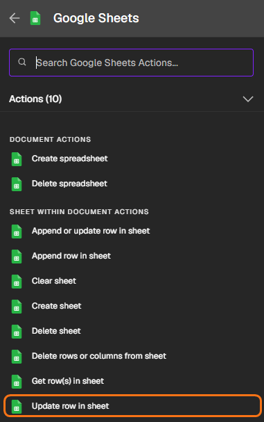
크게 보기 - Document · Sheet(
후기)를 고르면 아래에 칸이 나타납니다. 아래 표대로 채웁니다.

| 항목 | 설정 |
|---|---|
| Mapping Column Mode | Map Each Column Manually |
| Column to match on | id — 어느 줄을 고칠지 찾는 기준 열 |
| id 칸 (기준 열의 값) | 후기 불러오기의 id |
| 감정 | AI 감정의 답 + .trim() |
- Execute step을 누르고 시트를 엽니다.
시트 감정 열 다섯 칸이 모두 채워지면 성공입니다.
STEP 4부정만 남겨 알림 보내기
- 오른쪽 + → Filter — value1에 INPUT의 감정, String → is equal to, value2
부정 - 오른쪽 + → Gmail → Send a message — To는 내 주소에
+review붙이기, Subject[부정 후기] 확인 필요, Message에는 INPUT 위 Node 이름 칸을 후기 불러오기로 바꿔 후기를 끌어다 놓습니다 —{{ $('후기 불러오기').item.json.후기 }}. 바로 앞 Update row의 결과에는 고친 칸(id · 감정)만 남을 수 있기 때문입니다. - Canvas 아래쪽 주황색 Execute 버튼을 누릅니다.
[ Manual ] → [ 후기 불러오기 ] → [ AI 감정 ] → [ Update row ] → [ Filter ] → [ Gmail ]
부정 후기 수만큼(이 데이터에서는 2통) 알림이 오면 완성입니다.
연습 임무 — 혼자 만들어 보기
막히면 n8n 화면을 캡처해 ChatGPT에 올리고, "이 구조를 만들고 있는데 여기서 막혔어요"라고 물어보며 이어 가세요. 캡처에 API Key · 개인정보가 보이지 않게 합니다.
문의 분류 채우고 환불만 알림
상황 — 문의 시트의 비어 있는 분류 칸을 AI가 채우고, 환불문의만 나에게 알린다.
id 문의내용 분류 1 수업 자료는 어디서 받나요? 2 결제 취소하고 환불받고 싶어요. 3 영수증 재발급 부탁드립니다. 4 다음 달 수업도 열리나요? 5 중복 결제된 금액 돌려주세요.
성공 기준 — 분류 열 다섯 칸이 채워지고, 환불 관련 2건만 알림이 온다.
할 일 우선순위 매기기
상황 — 할 일 시트에 AI가 우선순위(높음 / 보통 / 낮음)를 채우고, "높음"만 모아 나에게 한 통으로 보낸다.
- 한 통으로 보내려면 Filter 뒤에 무엇을 넣어야 할까요? (4일차 Flow 3 참고)
성공 기준 — 우선순위 열이 채워지고, 높음인 일만 담긴 메일이 한 통 온다.
10.막혔을 때
| 이런 모습이면 | 확인할 것 |
|---|---|
| Switch에서 전부 기타로 감 | value1에 .trim()을 붙였는지, Gemini의 답에 설명이 붙었는지 OUTPUT을 봅니다. Prompt에 "한 단어만"을 넣고, 그래도 어긋나면 비교를 contains로 |
| If가 늘 false | 비교 종류(Number · String)가 값과 맞는지, 기준 글자가 정확한지. 숫자 형식 오류면 조건 아래 Convert types where required 켜기 |
| Gemini 칸에서 값을 못 찾음 | 바로 앞 Node가 아닌 값은 INPUT 위 Node 이름 칸에서 그 Node로 바꿔 끌어다 놓기 |
| 메일 하나에 두 Workflow가 반응 | Gmail Trigger의 Search 조건을 Flow마다 다르게([문의] · [상담]). 다 쓴 Workflow는 꺼 두기 |
| Gemini 오류 · 사용 한도 | Credential · Model 선택 확인. 한도 오류는 잠시 뒤 다시 실행 |
문제 해결 루틴
분기 Flow는 앞에서부터 — 들어온 값 → Gemini OUTPUT → 조건 → 선택된 출구 순서로 확인합니다. 캡처에 API Key가 보이지 않게 하세요.
11.추가 임무 — 연습 임무를 다 끝냈다면
추가 임무
연습 임무를 모두 끝낸 사람을 위한 임무입니다. 구조만 보고 직접 만들고, Prompt도 직접 씁니다. 막히면 화면을 캡처해 ChatGPT에 물어보며 이어 가세요.
Gmail Trigger([예약]) → Gemini(날짜만 YYYY-MM-DD로, 없으면 "없음") → If(없음이 아니면) → Google Calendar 일정 · 아니면 날짜를 묻는 답장 초안
Form(이름 · 이메일 · 과정 Dropdown) → Switch(과정) → 과정마다 Gemini가 맞춤 환영 문장 → Gmail
Schedule(매일 8시) → RSS Read → Limit(5) → Aggregate(title) → Gemini 3줄 요약 → Gmail
Form(자유롭게 쓰는 신청 글 하나) → Gemini(이름 · 연락 가능 시간 · 원하는 과정 뽑기) → Sheets 열마다 저장
Google 설문지(이름 · 이메일 · 인원) → 응답 시트 → Google Sheets Trigger(새 줄) → If(인원 10명 이상) → Gmail ×2 — Flow 1과 같은 일을 입구만 바꿔 만들기
12.오늘 내용 정리 & 다음 수업
오늘은 길의 규칙을 사람이 정했습니다. 다음 시간에는 AI Agent에게 시트 · 메일 · 캘린더를 Tool로 쥐여 주고, 채팅이나 메일로 요청하면 Agent가 필요한 Tool을 골라 쓰게 합니다.